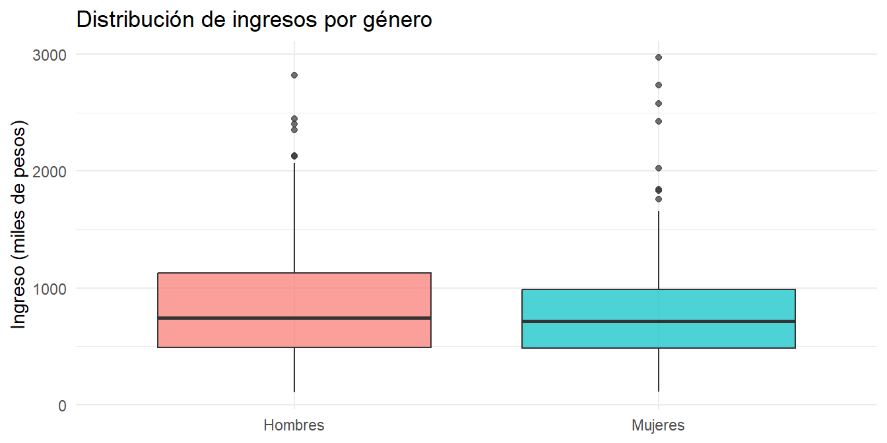
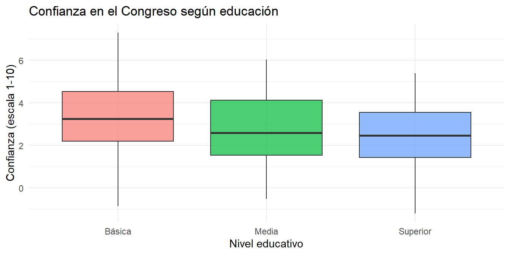

Última actualización: 7 de diciembre de 2024, 15:30 hrs.
Objetivos del capítulo
Al finalizar este capítulo, serás capaz de:
Realizar pruebas t para comparar medias entre dos grupos
Distinguir entre pruebas t para muestras independientes y pareadas
Usar ANOVA para comparar medias de más de dos grupos
Interpretar correctamente los resultados en R
10.1 ¿Cuándo comparamos medias?
En ciencias sociales frecuentemente queremos saber si hay diferencias entre grupos:
¿Hombres y mujeres tienen ingresos diferentes?
¿Cambió la opinión pública antes y después de un evento?
¿Hay diferencias en confianza institucional según nivel educativo?
Para responder estas preguntas usamos pruebas de comparación de medias.
10.2 Prueba t: La idea básica
La prueba t nos ayuda a determinar si la diferencia que observamos entre dos grupos es real (estadísticamente significativa) o si podría deberse simplemente al azar del muestreo.
TipLa pregunta que responde la prueba t
“¿Es la diferencia entre estos grupos lo suficientemente grande como para concluir que existe una diferencia real en la población, o podría ser solo casualidad?”
10.3 Prueba t para dos grupos independientes
Esta es la prueba más común. Comparamos las medias de dos grupos diferentes (por ejemplo, hombres vs. mujeres).
Ejemplo: ¿Existe brecha salarial entre hombres y mujeres?
# Datos simulados: ingresos por género (en miles de pesos)set.seed(2024)ingresos_hombres <-rlnorm(150, meanlog =log(750), sdlog =0.6)ingresos_mujeres <-rlnorm(150, meanlog =log(650), sdlog =0.6)# Prueba t para dos grupost.test(ingresos_hombres, ingresos_mujeres)
Welch Two Sample t-test
data: ingresos_hombres and ingresos_mujeres
t = 0.7294, df = 297.17, p-value = 0.4663
alternative hypothesis: true difference in means is not equal to 0
95 percent confidence interval:
-71.76787 156.29638
sample estimates:
mean of x mean of y
865.2076 822.9434
¿Cómo interpretar el resultado?
p-value: Si es menor a 0.05, hay diferencia significativa
Intervalo de confianza: Si NO incluye el cero, la diferencia es significativa
Medias de cada grupo: Nos dice cuál grupo tiene mayor promedio
En este caso, p < 0.05 y el intervalo no incluye cero, así que sí hay diferencia significativa en ingresos.

Comparación de ingresos por género
10.4 Prueba t pareada
Usamos esta prueba cuando medimos a las mismas personas en dos momentos diferentes.
Ejemplo: ¿Una intervención mejoró la percepción de seguridad?
# Medimos a las mismas 50 personas antes y despuésset.seed(123)antes <-rnorm(50, mean =4.2, sd =1.5)despues <- antes +rnorm(50, mean =0.8, sd =1.0)# Prueba t pareada (¡importante el paired = TRUE!)t.test(despues, antes, paired =TRUE)
Paired t-test
data: despues and antes
t = 7.391, df = 49, p-value = 1.649e-09
alternative hypothesis: true mean difference is not equal to 0
95 percent confidence interval:
0.689083 1.203734
sample estimates:
mean difference
0.9464083
El p-value < 0.05 indica que sí hubo un cambio significativo después de la intervención.
Importante¿Cuándo usar cada prueba t?
Situación
Prueba
Código en R
Dos grupos diferentes
t independiente
t.test(grupo1, grupo2)
Mismas personas, dos mediciones
t pareada
t.test(despues, antes, paired = TRUE)
10.5 ANOVA: Comparar tres o más grupos
Cuando tenemos más de dos grupos, no podemos hacer múltiples pruebas t (aumenta el riesgo de error). Usamos ANOVA (Análisis de Varianza).
Ejemplo: ¿La confianza en el Congreso varía según nivel educativo?
# Datos: confianza en el Congreso según educaciónset.seed(456)datos <-data.frame(educacion =rep(c("Básica", "Media", "Superior"), each =80),confianza =c(rnorm(80, mean =3.2, sd =1.8),rnorm(80, mean =2.8, sd =1.6),rnorm(80, mean =2.3, sd =1.5) ))# ANOVAmodelo <-aov(confianza ~ educacion, data = datos)summary(modelo)
Df Sum Sq Mean Sq F value Pr(>F)
educacion 2 39.4 19.70 7.608 0.000627 ***
Residuals 237 613.8 2.59
---
Signif. codes: 0 '***' 0.001 '**' 0.01 '*' 0.05 '.' 0.1 ' ' 1
¿Cómo interpretar?
Miramos el Pr(>F) (p-value)
Si p < 0.05, al menos un grupo es diferente a los demás

Confianza en el Congreso según educación
10.5.0.1 ¿Cuáles grupos son diferentes? Test de Tukey
ANOVA solo dice que hay diferencias, pero no cuáles. Para eso usamos Tukey:
TukeyHSD(modelo)
Tukey multiple comparisons of means
95% family-wise confidence level
Fit: aov(formula = confianza ~ educacion, data = datos)
$educacion
diff lwr upr p adj
Media-Básica -0.6380669 -1.2382068 -0.03792712 0.0341624
Superior-Básica -0.9775063 -1.5776462 -0.37736651 0.0004597
Superior-Media -0.3394394 -0.9395792 0.26070043 0.3777637
Miramos la columna p adj: si es < 0.05, esos dos grupos son significativamente diferentes.
10.6 Resumen: ¿Qué prueba usar?
Situación
Prueba
Código en R
Comparar 2 grupos diferentes
t independiente
t.test(A, B)
Comparar antes/después (mismas personas)
t pareada
t.test(despues, antes, paired=TRUE)
Comparar 3 o más grupos
ANOVA
aov(y ~ grupo, data)
NotaLo más importante
p < 0.05 → Diferencia significativa (rechazamos H₀)
p ≥ 0.05 → No hay evidencia suficiente de diferencia
Siempre visualiza tus datos antes de hacer la prueba
Lecturas recomendadas
Agresti, A., & Finlay, B. (2009). Statistical Methods for the Social Sciences (4th ed.). Pearson. → Capítulo 7 cubre pruebas t con ejemplos claros.
Llaudet, E., & Imai, K. (2022). Data Analysis for Social Science. Princeton University Press. → Explicación accesible de comparación de grupos.